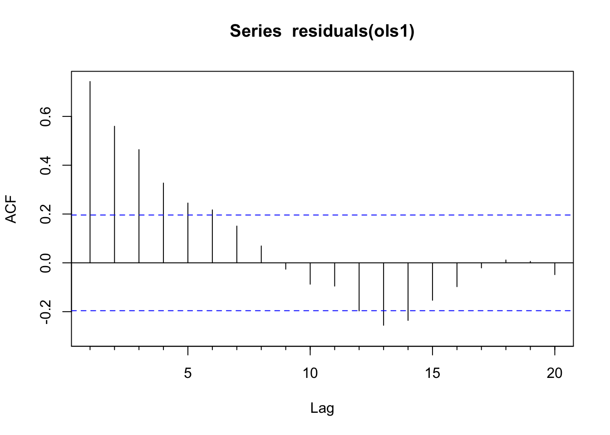
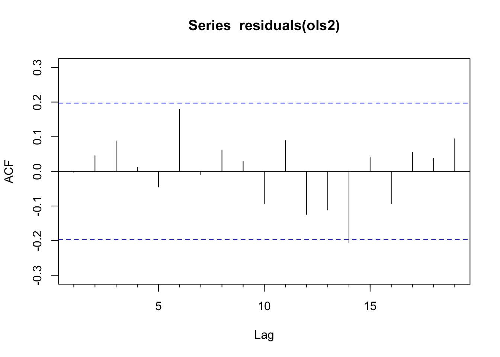
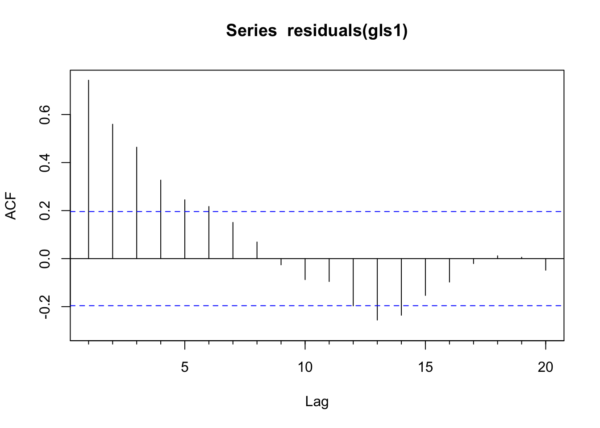
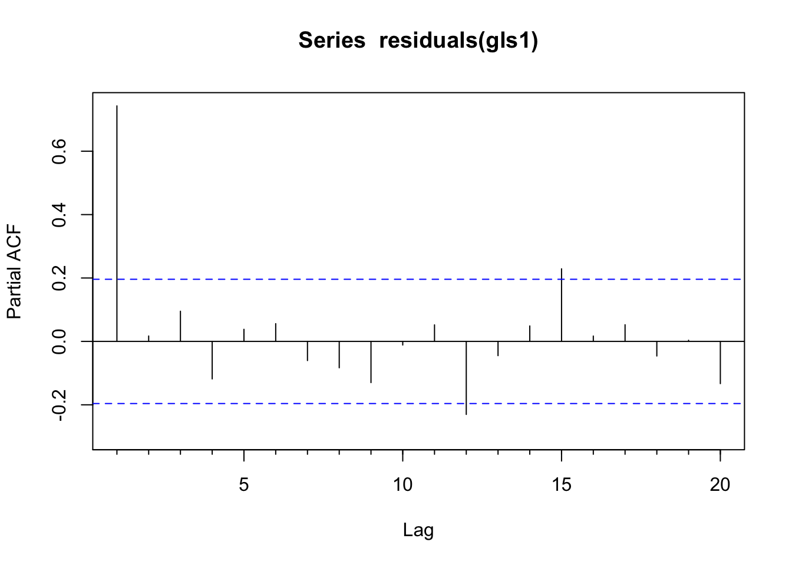
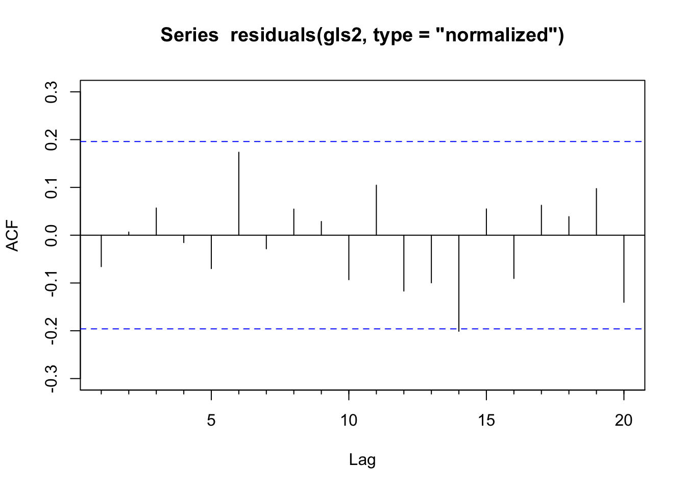
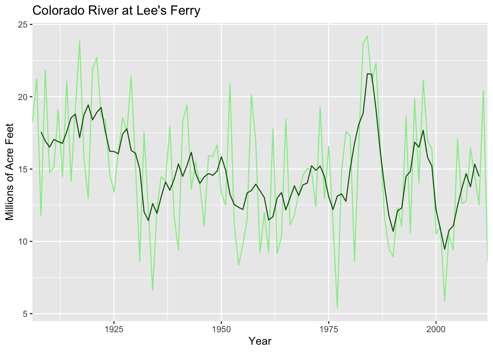

Code
library(tidyverse)
library(nlme)
library(forecast)OLS regression can be problematic with time series because the assumption of independence gets violated pretty easily. But, there are other approaches that are useful.
Have a look at Chapter five (through section 5.3) from Cowpertwait and Metcalfe (2009). It’s OK to skim the readings in this book. It’s not a great book for our purposes as many of you haven’t taken linear algebra and the book occasionally goes that way. But it’s useful to hum your way through the chapter nonetheless.
You’ll want to install the nlme (Pinheiro et al. 2025) library if you don’t have it. We are going to fit a linear model using generalized least squares as opposed to ordinary least squares and you’ll need the gls function from nlme. I’ll use forecast (Hyndman et al. 2026) as well and tidyverse (Wickham 2023).
As know, time series data are typically autocorrelated in some way. We’ve seen this over and over and we’ve learned to spot it and to fit models of various complexity to describe it.
A very common situation with environmental data is to want to do an ordinary least squares regression using time series data. If your data are a time series, you are doing time-series regression. And that has different pitfalls than standard regression.
The biggest issue is that if the residuals (errors) are autocorrelated, you have violated the assumption of independence. What does this mean? Well, the standard errors on the coefficient estimates tend to be underestimated (and the t-scores overestimated) when the autocorrelations of the errors at low lags are positive. This means that any statistical inference could be wrong, e.g., the the p-values from a t-test will be artificially low. But despair not! If we take the the time series structure of the errors into account we can usually still model the association between \(x\) and \(y\) effectively.
Is this a little opaque? Let’s make up an example. Let’s say you wanted to build a model of salmon in a creek as function of the summer water temperature. Temps get too warm and the wee fish suffer and die before they get counted by the poor intern. You can make up a mechanism however you like. This is just a thought experiment, right? So you make a nice linear model \(y=\beta_0 + \beta_1 x + \epsilon\) where \(y\) is the number of salmon, \(\beta_0\) is the intercept and \(\beta_1\) is the coefficient on the variable \(x\) which is the water temperature, and \(\epsilon\) is the residual. You have a gorgeous time series every year (\(t\)) for some number of years which makes this a time series regression: \(y_t=\beta_0 + \beta_1 x_t + \epsilon_t\). You run an OLS regression and get a negative slope and a t-test says that your model has skill (good \(R^2\), \(p<0.05\), etc). Great – you fire off a letter to Nature, or write your thesis, or go put some wood in a stream, or just bathe in the satisfaction of a job well done. But of course your model won’t fit perfectly so you’ll have residuals or errors from the model (\(\epsilon\)). Now, if those residuals are not independent and identically distributed (~iid), you have violated the assumptions of the OLS regression. The standard errors might be wrong, the p-values might be inflated. Alas. The classic reason that residuals are not ~iid in time series is because they are not independent and that means autocorrelation.
In general here is a good approach when dealing with time series variables in a regression.
Start by doing an ordinary least squares regression.
Look at the AR structure of the residuals with ACF and PACF plots.
If the residuals look clean then carry on. Note that it’s OK for the variable \(y\) or \(x\) to be autocorrelated – watch the residuals. If the residuals have AR structure, estimate and diagnose an appropriate AR or ARMA model.
If needed, get the adjusted regression coefficients (estimates, standard errors). We want to have a model that adjusts for the AR structure in the residuals. We can create an adjusted data set by hand and use OLS (see text) or use GLS with an appropriate correlation structure (below).
Let’s create a data set to play with. We will generate two time series. The variable x will be ordinary white noise. The variable y will be a function of x plus AR(1) noise \(\epsilon\). We will pretend we don’t know about \(\epsilon\) and perform two regressions of \(y=f(x)\) and look at the residuals and the estimate of the slope (\(\hat\beta\)).
set.seed(47) # for reproducibility
n <- 100
phi <- 0.8
x <- ts(rnorm(n))
epsilon <- arima.sim(model = list(ar=phi),n = n)
epsilon <- epsilon - mean(epsilon) # demean
B0 <- 0 # intercept
B1 <- 0.5 # slope
y <- B0 + B1*x + epsilon
# step 1 - the regular ols regression
ols1 <- lm(y~x)
# step 2 - inspect the residuals
Acf(residuals(ols1)) # problem with independence
[1] 0.7429079Time Series:
Start = 1
End = 6
Frequency = 1
y y.lag1
1 1.27400585 NA
2 -0.66681772 1.27400585
3 -0.03946659 -0.66681772
4 1.07026783 -0.03946659
5 0.52585722 1.07026783
6 0.86750649 0.52585722
When the OLS assumptions are met – independent errors, equal variance, normality – OLS is hard to beat. The estimators are BLUE: Best Linear Unbiased Estimators. And OLS has a nice teaching property: you can derive it with algebra and a little calculus, without any matrix notation. That is probably how you learned it.
The problem, as we have just seen, is that time series residuals are often autocorrelated. That violates the independence assumption, which means the standard errors on your coefficients can be badly wrong – typically too small, which makes your p-values too optimistic. You think you have more evidence than you actually do.
Generalized least squares (GLS) is the natural fix. The key difference between OLS and GLS is in what they assume about the errors. OLS assumes the errors are independent and identically distributed. GLS allows the errors to have a richer structure – specifically, a covariance matrix \(\Sigma\) that can encode both unequal variances and correlations between observations. You can think of it this way: OLS minimizes the sum of squared distances between observed and predicted values, treating all observations equally. GLS minimizes those same distances but weighted by the covariance structure of the residuals, so observations whose errors are strongly correlated with their neighbors get less weight – they are carrying redundant information.
Formally, the OLS and GLS estimators sit side by side like this:
\[\hat{\boldsymbol{\beta}}_{OLS} = (\mathbf{X}^\top \mathbf{X})^{-1} \mathbf{X}^\top \mathbf{y}\] \[\hat{\boldsymbol{\beta}}_{GLS} = (\mathbf{X}^\top \boldsymbol{\Sigma}^{-1} \mathbf{X})^{-1} \mathbf{X}^\top \boldsymbol{\Sigma}^{-1} \mathbf{y}\]
GLS is OLS with \(\boldsymbol{\Sigma}^{-1}\) inserted as a weighting matrix. When \(\boldsymbol{\Sigma}\) is just \(\sigma^2 \mathbf{I}\) (equal variances, no correlation), the two formulas are identical – OLS is a special case of GLS. If the matrix notation here is unfamiliar, the OLS via Algebra and Matrices aside walks through where both formulas come from and why they are structured the way they are.
In practice you do not know \(\boldsymbol{\Sigma}\) exactly. When using gls() from the nlme package, you specify the structure of \(\boldsymbol{\Sigma}\) – for example, that the errors follow an AR(1) process – and the software estimates the parameters of that structure from the data using maximum likelihood or restricted maximum likelihood (REML). This is also a reason not to use GLS carelessly. Why not always use GLS over OLS? It’s a fair question, and the answer comes down to the KISS principle. If you meet the OLS assumptions, use OLS. If you do not, GLS is a good option – but it requires you to correctly specify the structure of the residual correlations. Get that wrong and you might do more harm than good.
We will start by assuming epsilon follows an iid process (e.g., \(N(0,1)\)) and we will fit a model with uncorrelated errors. E.g., here we use gls but this gives the same info as lm would because gls assumes iid errors unless told otherwise.
Generalized least squares fit by REML
Model: y ~ x
Data: NULL
AIC BIC logLik
395.8891 403.644 -194.9446
Coefficients:
Value Std.Error t-value p-value
(Intercept) 0.01618039 0.1690315 0.0957241 0.9239
x 0.18575084 0.1726484 1.0758912 0.2846
Correlation:
(Intr)
x -0.053
Standardized residuals:
Min Q1 Med Q3 Max
-2.4730783 -0.3348105 0.1230050 0.5216485 2.3144795
Residual standard error: 1.687976
Degrees of freedom: 100 total; 98 residual

The residuals of this model are autocorrelated as an AR(1) process from looking at the plots. Thus, we have violated the assumption of independent residuals. But do not despair. We will use a GLS model that allows us to specify an AR(1) correlation structure for the residuals and perform hypothesis testing in the presence of this temporal structure. Doing so, will give us new and improved estimates of the parameters. We will thus sleep well knowing in our hearts that we have done good.
We will do this by updating the gls1 object and specifying that errors follow an autoregressive process with the corARMA function. By specifying corARMA(p=1) we are asking nlme to fit an AR(1) error structure. An AR(1) assumes that residuals closer in time are more similar and the correlation decays geometrically. If we had residuals that followed a different process (e.g., an ARMA(1,1) model) we could try to fit that with corARMA(p=1, q=1). The update function will then try to estimate the AR and MA parameters using numerical optimization. This can fail when models are too complex (e.g., too high an order).
Generalized least squares fit by REML
Model: y ~ x
Data: NULL
AIC BIC logLik
307.26 317.5998 -149.63
Correlation Structure: AR(1)
Formula: ~1
Parameter estimate(s):
Phi
0.7946776
Coefficients:
Value Std.Error t-value p-value
(Intercept) -0.0697539 0.5035316 -0.138529 0.8901
x 0.4496653 0.0948284 4.741882 0.0000
Correlation:
(Intr)
x -0.023
Standardized residuals:
Min Q1 Med Q3 Max
-2.4516182 -0.4319559 0.1445074 0.5484367 2.1868956
Residual standard error: 1.767387
Degrees of freedom: 100 total; 98 residual
We ask for the “normalized” residuals above because they are the transformed residuals that account for the error correlation and heteroscedasticity structure we specified. They’re essentially standardized residuals that assume your model’s covariance matrix is correct.
Zooming out a bit. We fit a linear model of the form \(y=\beta_0 + \beta_1x\) using GLS and got out estimates for the intercept (\(\hat\beta_0\)) and slope (\(\hat\beta_1\)). First, we assumed that the error term was uncorrelated. Looking at summary, we can see the the estimate of the slope (\(\hat\beta_1\)) is 0.186 and significantly different than zero. We also have a variety of goodness of fit statistics and some other goodies. I’ll walk through those in the video. The important thing to wrap your head around here is that we fit GLS with uncorrelated errors meaning it’s essentially identical to OLS. Compare the above to the more familiar summary(lm(y~x)).
So what’s the big deal? We started with a model that showed x as a significant predictor of y. We ended up, after much wailing and rending of garments, with a model that showed x as a significant predictor of y. Is it a better model? Was it worth the trouble? Let’s consider a few things.
Model df AIC BIC logLik Test L.Ratio p-value
gls1 1 3 395.8891 403.6440 -194.9445
gls2 2 4 307.2600 317.5998 -149.6300 1 vs 2 90.62914 <.0001The GLS model with the correlated residuals has a lower AIC and BIC than the naive uncorrelated model.
The original function we used to make \(y\) was \(y=\beta_0 + \beta_1x + \epsilon\) where \(\beta_0 = 0\) and \(\beta_1\) = 0.5. Both the GLS models got the intercept right (-0.07 for gls2 and 0.02 for gls1). But the GLS model with the correlated residuals does a better job of getting the true value of the slope (0.45 vs 0.19).
The error estimate on \(\beta_1\) was lower on the model with correlated residuals than the naive uncorrelated model (0.0948 vs 0.1726). This is because GLS uses the correct structure of error variance and correlation, which improves efficiency of parameter estimation.
Finally, we did it “right” – that should be satisfying. What would have happened if \(\beta_1\) had been lower? That is, what if \(y\) was made up of more noise and less \(x\)? E.g., \(y=\beta_0 + 0.5(\beta_1)x + 2(\epsilon)\)? This model, with 100 points should be pretty robust on the simple hypothesis test on the slope (H\(_1\): \(\beta_1 \neq 0\)) but we know that parameter estimation is inefficient with autocorrelated residuals so having clean residuals and good parameter estimation is important.
There is a lot to learn about how the nlme library goes about fitting the correlation structures. The definitive book on the subject is Pinheiro and Bates (2000) and should be something you look to for more information. Zuur’s 2009 book “Mixed Effects Models and Extensions in Ecology with R” is also quite good.
Below I’m going to ask you to compare GLS and OLS using some real data. But first, write a paragraph that explains the difference between OLS and GLS. What is a generalized model?
Now, revisit the code above and adjust n, B1, and phi to see how the results of an OLS model change. Is OLS or GLS better at capturing the true value of B1 when there are non-independent errors? Or is OLS robust to moderate autocorrelation? You can do this in a full blown simulation of course, but you can just mess around with the values a bit and try to get a feel for it.
Finally, let’s look at some data. A great paper by Connie Woodhouse and colleagues looks at how annual flows on the Colorado River are affected by precipitation, soil moisture, and temperature. Read the paper. It’s great and short.
dat <- readRDS("data/woodhouse.rds")
dat <- dat %>% mutate(MAF = LeesWYflow / 1e6)
# add a 5-yr moving average
dat <- dat %>% mutate(MAF5yr = c(stats::filter(MAF,filter = rep(0.2,5))))
ggplot(data=dat, aes(x=Year)) +
geom_line(aes(y=MAF),color="lightgreen") +
geom_line(aes(y=MAF5yr),color="darkgreen") +
labs(y= "Millions of Acre Feet", title="Colorado River at Lee's Ferry",
sub = "Total Flow for Water Year") +
scale_x_continuous(expand=c(0,0))
The main gist of the paper is that precipitation explains most of the variability in the river’s flow but that temperature is important under certain conditions. E.g., “Different combinations of temperature, precipitation, and soil moisture can result in flow deficits of similar magnitude, but recent droughts have been amplified by warmer temperatures that exacerbate the effects of relatively modest precipitation deficits.” This is cool: Transpiration and evaporation are greater when it’s warmer, right? The cool thing that Woodhouse et al. have done is tease out the relationship between precipitation and temperature in a new way.
The data they used are online and I’ve grabbed the relevant info and put it in the file woodhouse.rds as a data.frame. Explore the data (go back to week one for ideas of what to do – plot your data!) and eventually make a model of river flow (LeesWYflow) as a function of October to April precipitation (OctAprP). The units on flow are cumulative flow over the water year in acre feet and cumulative October to April precipitation is in mm.
Is it a good model? How do the residuals look in a time series context? Interpret. Does a GLS approach change your interpretation from an OLS approach? Given your work with the simulated data above do you think Woodhouse et al. are on safe footing with OLS?
Pass in a R Markdown doc with your analysis. Leave all code visible, although you may quiet messages and warnings if desired. Turn in your knitted html. The last section of your document should include a reflection where you explain how it all went. What triumphs did you have? What is still confusing?